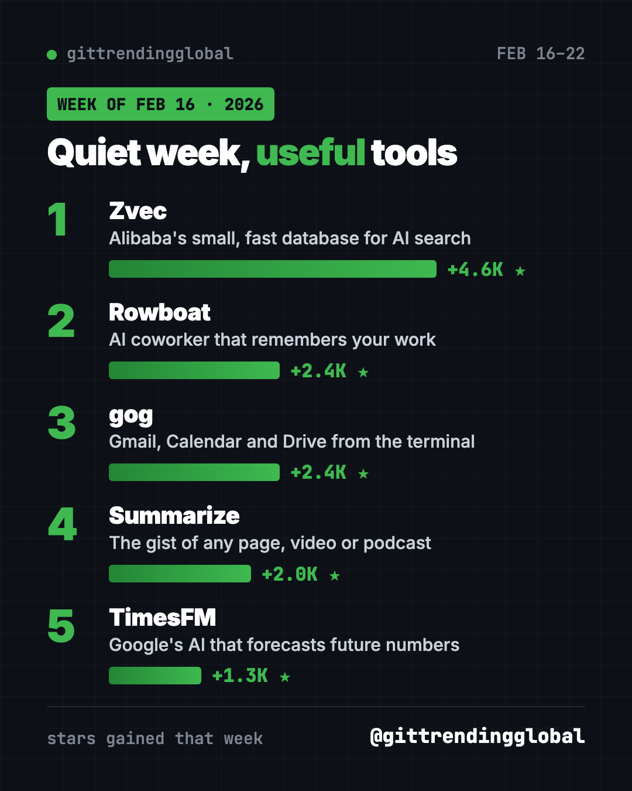
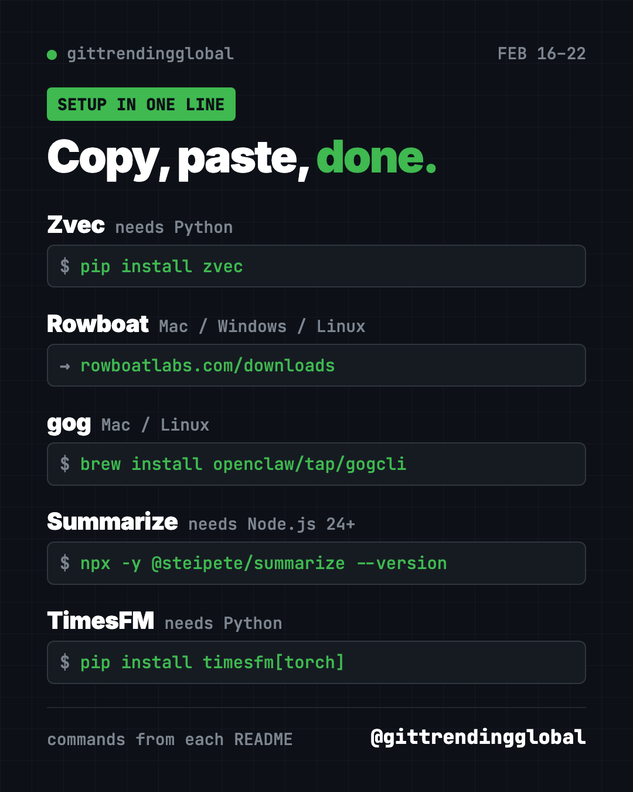

Home › Top repos › GitHub trending this week
Hottest GitHub Repos, Week of February 16, 2026
Hottest GitHub repos week of February 16, 2026: Zvec, Rowboat, gog, Summarize and Google's TimesFM, explained simply with setup lines.
The hottest GitHub repos week of February 16, 2026 were Zvec, Rowboat, gog, Summarize and TimesFM. No single project ran away with the week. The leader, Alibaba's Zvec, gained about 4,600 stars.
A quiet week is often a good week for useful tools. This list has an AI coworker, a way to read the gist of any video, and a Google model that predicts numbers. Here is how each one fits into a normal day.
Key takeaways
- Zvec is a small, fast database from Alibaba that helps apps search by meaning.
- Rowboat is a free desktop AI coworker that remembers your email, meetings and notes.
- gog lets you work with Gmail, Calendar and Drive by typing commands.
- Summarize gives you the gist of a web page, YouTube video or podcast.
- TimesFM is Google Research's model for forecasting future numbers from past ones.
Hottest GitHub repos week of February 16, 2026 in one table
| Rank | Repo | Stars gained | Use it to | Easy for beginners? |
|---|---|---|---|---|
| 1 | Zvec | +4.6K | Add smart search to an app | No, it's for builders |
| 2 | Rowboat | +2.4K | Get an AI coworker on your desktop | Yes, it's an app |
| 3 | gog | +2.4K | Handle Gmail and Calendar by command | Some setup needed |
| 4 | Summarize | +2.0K | Get the gist of links and videos | Yes, there's a browser add-on |
| 5 | TimesFM | +1.3K | Forecast sales, traffic or prices | No, it's for data people |
Gains are for February 16 to 22, 2026. Totals were checked on GitHub on October 16, 2026. All five are free and open source.

1. Zvec: a tiny database that searches by meaning
Stars: +4.6K this week · about 16K total today
What it is: Zvec is a "vector database." That is a store that finds things by meaning, not exact words. Search "cozy winter shoes" and it can match "warm boots." Zvec runs inside your app, with no separate server. Alibaba says it is tested inside its own group.
Who it's for: Developers adding AI search or memory to an app.
One everyday use: Build a search box for your recipe collection that understands "something quick with chicken."
Install it: For Python 3.10 to 3.14, copy and paste this:
pip install zvec
Node.js users can run npm install @zvec/zvec.
Install zvec and build a small search over the recipes in recipes.txt that finds matches by meaning.
2. Rowboat: an AI coworker that remembers your work
Stars: +2.4K this week · about 18K total today
What it is: Rowboat is a free desktop app that acts like an AI coworker. It reads your email, meetings and notes, and links them into a "knowledge graph," a web of connected facts. It drafts replies to important emails and takes meeting notes. It can also run small tasks on a schedule, like every morning at 8.
Who it's for: Busy people who live in their inbox and calendar.
One everyday use: Ask "what did I promise the client in last week's meeting?" and get the answer with context.
Install it: Download it for Mac, Windows or Linux from the Rowboat downloads page.
Help me install Rowboat from https://github.com/rowboatlabs/rowboat and connect only my work email to start.
💡 Tip: Rowboat has its own built-in browser, kept apart from your main one. The README suggests logging in there only to the accounts you want the assistant to use.
3. gog: Gmail, Calendar and Drive from the terminal
Stars: +2.4K this week · about 8.5K total today
What it is: gog is one command-line tool for Gmail, Calendar, Drive, Docs, Sheets and more. It has a read-only mode, so it can look without changing anything. AI helpers can use it too. The project now lives under the OpenClaw account on GitHub.
Who it's for: People comfortable typing commands, and AI helpers that need email access.
One everyday use: List all unread emails from the past week in one go.
Install it: On Mac or Linux, copy and paste this:
brew install openclaw/tap/gogcli
Install gog with Homebrew and help me set it up in read-only mode for my Gmail, step by step.
⚠️ Heads up: Setup needs your own Google Cloud login file. Give gog only the services you need, and start with
--readonly.

4. Summarize: the gist of any link
Stars: +2.0K this week · about 6.7K total today
What it is: Summarize takes a web page, file, YouTube video or podcast and gives you a short summary. It works as a command or as a side panel in Chrome and Firefox. It can pull clean text with no AI key at all. For real summaries, you connect an AI provider or a coding helper like Codex.
Who it's for: Students, researchers and anyone with too many open tabs.
One everyday use: Get the key points of a one-hour podcast before deciding to listen.
Install it: You need Node.js 24 or newer. Copy and paste this to try it without installing:
npx -y @steipete/summarize --version
On a Mac you can also run brew install summarize.
Install Summarize and give me a 5-bullet summary of this YouTube link, using my Codex login.
5. TimesFM: Google's number forecaster
Stars: +1.3K this week · about 34.5K total today
What it is: TimesFM is a pretrained model from Google Research. Feed it past numbers, like daily sales, and it predicts what comes next. "Pretrained" means it works out of the box, without training it on your data first. The README notes this open version is not an officially supported Google product.
Who it's for: Small business owners, analysts and students who work with spreadsheets of numbers over time.
One everyday use: Forecast next month's coffee shop sales from last year's daily totals.
Install it: Copy and paste this:
pip install timesfm[torch]
On Apple Silicon Macs, pip install timesfm[mlx] skips PyTorch.
Install TimesFM and forecast the next 30 days from the sales column in sales.csv, then draw a simple chart.
Which one should you try first?
- You want help with email and meetings: download Rowboat.
- You have too much to read: try Summarize.
- You live in Gmail and like commands: try gog.
- You track numbers over time: try TimesFM.
- You build apps: try Zvec.
FAQ
What were the hottest GitHub repos the week of February 16, 2026?
Zvec, Rowboat, gog, Summarize and TimesFM gained the most stars from February 16 to 22, 2026.
Is Rowboat free?
Yes. Rowboat is open source under Apache-2.0. You bring your own AI model keys.
Does Summarize need an AI account?
Not for pulling clean text. For AI summaries, connect a supported provider or a coding helper you already use.
Can TimesFM predict stock prices?
It forecasts any series of numbers, but no model can promise accurate prices. Use it for planning, not betting.
See the best GitHub repos of February 2026 and February 2026 in AI. Neighbouring weeks: February 9 and February 23.
Want a new free tool explained every day? Follow @gittrendingglobal on Instagram.
Keep reading

Trending GitHub Repos October 2026: The Top 5 So Far
The trending GitHub repos of October 2026 so far: a free Photoshop-style editor, an AI art studio, a big AI model for gaming PCs and more, explained.

Trending GitHub Repos This Week, Oct 5 2026: The Top 5
Trending GitHub repos this week Oct 5 2026: Matt Pocock's skills, the openGym workout tracker, e2e testing, HyperFrames video and claude-mem memory.

GitHub Trending September 28, 2026: Hindsight and Paperclip
GitHub trending September 28 2026: Hindsight, Paperclip, NVIDIA's OpenShell and a free 542-lesson AI course, with setup steps for each.